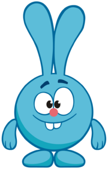
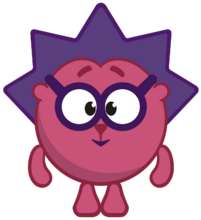
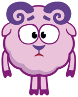
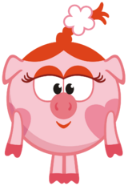
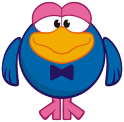
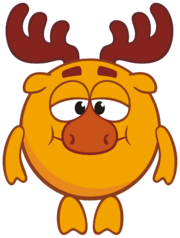
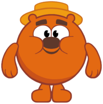
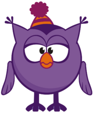
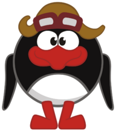

| Имя | Крош |

Крош Крош — весёлый, неунывающий и энергичный кролик мужского пола, живущий в Ромашковой Долине вместе с другими Смешариками. Любит активно проводить время и совершать полезные дела. Активно занимается спортом и играет. Никак не может усидеть на месте, постоянно прыгает и что-то делает. Крош — гиперактивный и жизнерадостный кролик. Крош оптимистичен, ведёт очень активный образ жизни и постоянно находится в состоянии мобилизации. Крош крайне общителен, состоит в дружеских отношениях со сверстниками и с частью взрослого населения. Однако в некоторых сериях проявляется сентиментальность и чувствительность Кроша. |
|---|---|---|
| Пол | Мужской | |
| Биологический вид | Кролик | |
| День рождения | 29 декабря | |
| Любимая фраза | "Ёлки-иголки!" | |
| Ссылка на домик Кроша | ||
| Имя | Ёжик |

Ёжик Ёжик — спокойный, рассудительный и застенчивый ёж мужского пола, живущий в стране смешариков. Собирает множество коллекций и очень бережно за ними ухаживает. Любит коллекционировать кактусы и фантики от конфет, ещё он любит яблоки. Его лучший друг — Крош, но он, в отличие от него, является более спокойным. Не очень спортивный, хотя иногда мастерски проявляет себя. Ёжик очень соответствует представлениям о своём роде. Ёжик не поспешен, рассудителен и весьма чувствителен. Он очень хорошо соблюдает дистанцию в разговоре и старается всех мирить. Ёжик очень болезненно относится к чужим проблемам и старается их решать. Именно он в компании со своим другом Крошем — сердце, когда Крош в основном голова. Ёжик достаточно хороший воспитатель. |
| Пол | Мужской | |
| Биологический вид | Ёж | |
| День рождения | 14 февраля | |
| Любимая фраза | "...,так сказать,..." | |
| Ссылка на домик Ёжика | ||
| Имя | Бараш |

Бараш Бараш — сентиментальный меланхоличный баран-романтик, поэт-лирик, он вздыхает и пишет стихи о печали, любви и еде. Всё время ждёт музу или вдохновение. Ведёт в основном ночной образ жизни. Очень талантливый, иногда даже поёт. Его тонкую натуру легко обидеть, поэтому Бараш требует много внимания от окружающих, которое он привлекает своей ранимостью и загадочностью. Таким образом, Бараш — легко ранимый, в трудной ситуации он даже может заплакать. Но он не желает, да и не способен причинить кому-нибудь зла. Всячески пытается выразить свою любовь к Нюше, хоть она и не отвечает ему взаимностью. |
| Пол | Мужской | |
| Биологический вид | Баран | |
| День рождения | 29 апреля | |
| Любимая фраза | «Ай да Бараш, ай да овечий сын!» | |
| Ссылка на домик Бараша | ||
| Имя | Нюша |

Нюша Нюша — свинка-модница, очень следит за красотой и своей фигурой, одна из главных героев мультсериала «Смешарики». Нюша — типичная хрюшка, мечтающая найти принца и считающая себя красавицей. Любит прихорашиваться, внимательно следит за модой. Пытается найти в себе скрытые таланты. Нюша — очень модная маленькая свинка, по характеру она явный холерик: отдается к делу со страстностью и упорством, может преодолевать значительные трудности, но, в тоже время, склонная к бурным эмоциональным вспышкам и резкой смене настроения. |
| Пол | Женский | |
| Биологический вид | Свинья | |
| День рождения | 13 июля | |
| Любимая фраза | «Ну вы совсем!» | |
| Ссылка на домик Нюши | ||
| Имя | Кар-Карыч |

Кар-Карыч Кар-Карыч — ворон-путешественник в прошлом. Ныне любит сидеть в кресле-качалке, играть в лото и вспоминать свои невероятные путешествия. В своих рассказах может приукрасить действительность, иногда немного хитрит. Кар-Карыч — пожилой ворон, один из главных героев мультсериала «Смешарики». Самый артистичный среди главных героев. Играет на рояле, виолончели и даёт уроки пения другим Смешарикам. Довольно мудр (хотя в серии «Археология» предстает хитрецом, ленивцем, вруном и наглецом), верит, что погодой управляют индейские боги Лунный ворон и Огненный заяц (а может быть, хочет, чтобы другие в это верили?). Любит вздремнуть днём, прекрасно играет на рояле. Авантюрист, в серии «Индийский чай» создаёт секту, похожую на солнцепоклонническую. |
| Пол | Мужской | |
| Биологический вид | Ворон | |
| День рождения | 3 марта | |
| Любимая фраза | «Мамма мия!» | |
| Ссылка на домик Кар-Карыча | ||
| Имя | Лосяш |

Лосяш Лосяш — интеллигентный лось-учёный, мечтающий получить Нобелевскую премию. Один из главных героев мультсериала «Смешарики». Изобретателен. Интересуется многими науками: химией, астрономией, биологией, физикой и так далее. Из-за сильной увлечённости Лосяша научной деятельностью в его доме царит беспорядок, да и вид его самого довольно неряшливый. Лосяш — спокойный и очень умный лось, хотя иногда у него иногда случаются вспышки нервозности. Он полностью отдан науке, однако, если он не находит объяснения встретившимся ему вещам, то сразу начинает верить во всякую ненаучную ерунду («Скверная примета» — начал верить в приметы; «Ля» — в водяного; «Метеорология» — в индейских богов, управляющих погодой и так далее). Если он что-то не понимает, то он пытается сделать это научным методом. |
| Пол | Мужской | |
| Биологический вид | Лось | |
| День рождения | 25 мая | |
| Любимая фраза | «Феноменально!» | |
| Ссылка на домик Лосяша | ||
| Имя | Копатыч |

Копатыч Копатыч — добрый и хозяйственный медведь-огородник, обеспечивающий растительную пищу смешарикам. Любит играть в шахматы и пить чай. Раньше жил в Мегаполисе. Зимой Копатыч, как и все медведи, засыпает, но просыпается на Новый год. Копатыч отличается консервативными взглядами. Копатыч – это добродушный хозяйственный медведь. Он любит свой огород и трепетно за ним ухаживает: борется с некультурными растениями, стрижет газон и строит новые ульи своим пчёлам, чтобы они приносили больше его любимого меда. В свободное время Копатыч не прочь сходить на рыбалку, поболеть за свою футбольную команду (слушает радиорепортажи даже во время работы в саду) и попеть частушки под гармошку. |
| Пол | Мужской | |
| Биологический вид | Медведь | |
| День рождения | 8 октября | |
| Любимая фраза | «Укуси меня пчела!» | |
| Ссылка на домик Копатыча | ||
| Имя | Совунья |

Совунья Совунья — сова-спортсменка, ведущая размеренный образ жизни и уверенная в огромной важности спорта и здоровья. По совместительству врач и профессиональный повар. Совунья — старая и мудрая сова. В сериях не раз говорится, что она уже далеко не молодая, однако благодаря своей спортивной форме она выглядит не такой уж и старой. Совунья — достаточно стойкий и энергичный смешарик. Совунья — сторонник здорового образа жизни. По образу жизни Совунья не сова, а жаворонок. Также она имеет привычку неприлично громко смеяться, хотя и считает, что привычка исчезла. |
| Пол | Женский | |
| Биологический вид | Сова | |
| День рождения | 15 сентября | |
| Любимая фраза | «Моя прелесть!» | |
| Ссылка на домик Совуньи | ||
| Имя | Пин |

Пин Пин — изобретатель-самоучка с тремя классами образования, гениальнейший пингвин всех времён. Виртуоз в своих железных изобретениях. Всё время что-то изобретает и мастерит, не задумываясь о последствиях. Имеет сына-робота Биби. Пин — иностранец, поэтому и говорит он с заметным немецким акцентом. Этот гений сдержан в эмоциях, он чопорен и щепетилен даже в мелочах и любит учиться на ошибках. Впустую говорить не любит, считает, что если что-то сказать, то обязательно к месту. |
| Пол | Мужской | |
| Биологический вид | Пингвин | |
| День рождения | 9 августа | |
| Любимая фраза | «О, Майн Гот!» | |
| Ссылка на домик Пина | ||